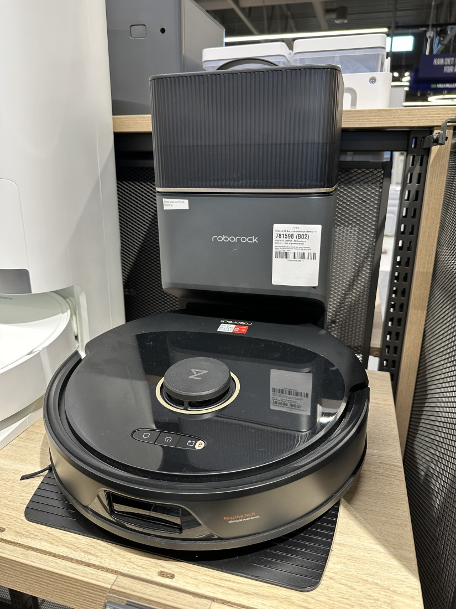
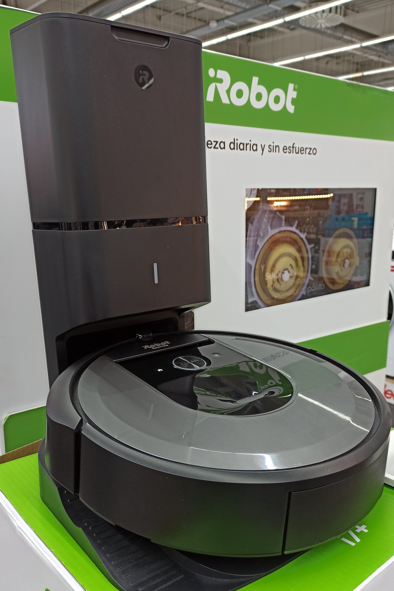

Explora por tema
Entre marcas

{kind=link}

{kind=link}
Comparaciones que deberán concretarse en modelos equivalentes.
10 artículos previstos. El estado de cada página distingue los textos redactados de los esquemas pendientes.
Pendiente de investigación
Roomba vs Roborock: ¿cuál es mejor?
Pendiente de investigaciónXiaomi vs Cecotec: comparativa de robots aspiradores
Comparativa general por gamas; mantener diferenciada del tema 63, limitado a gama económica.
Pendiente de investigaciónRoborock vs Dreame: diferencias clave
Pendiente de investigaciónEcovacs vs Roomba: ¿cuál elegir?
Pendiente de investigaciónShark vs iRobot: comparativa
Pendiente de investigaciónCecotec vs Xiaomi: gama económica comparada
Limitar a modelos económicos concretos para no repetir el tema 59.
Pendiente de investigaciónRoborock vs Ecovacs: gama alta comparada
Pendiente de investigaciónNarwal vs Roborock: ¿vale la pena el precio?
Pendiente de investigaciónTineco y Roborock: diferencias entre fregadoras manuales y robots
Comparar categorías y usos, no proclamar un robot ganador entre equipos de distinta clase.
Pendiente de investigación